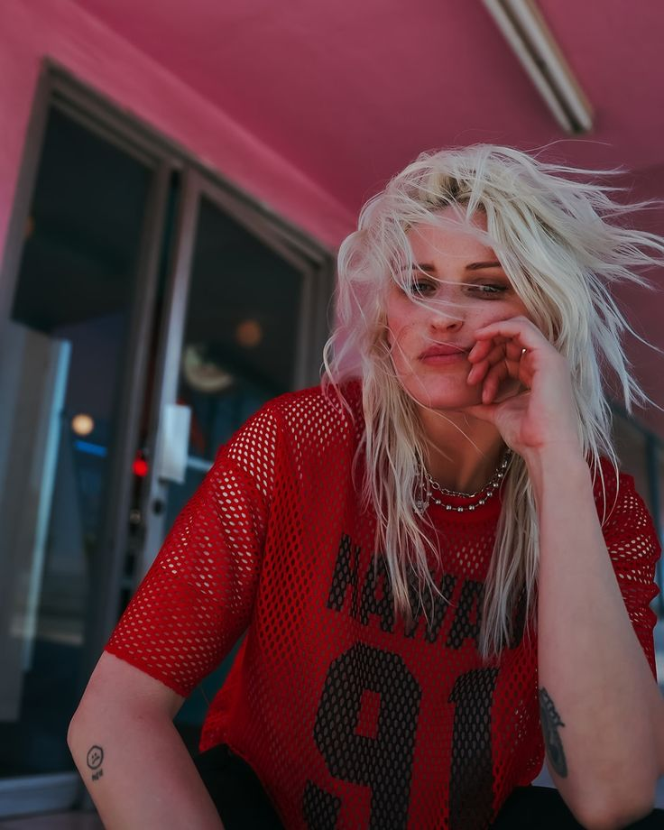
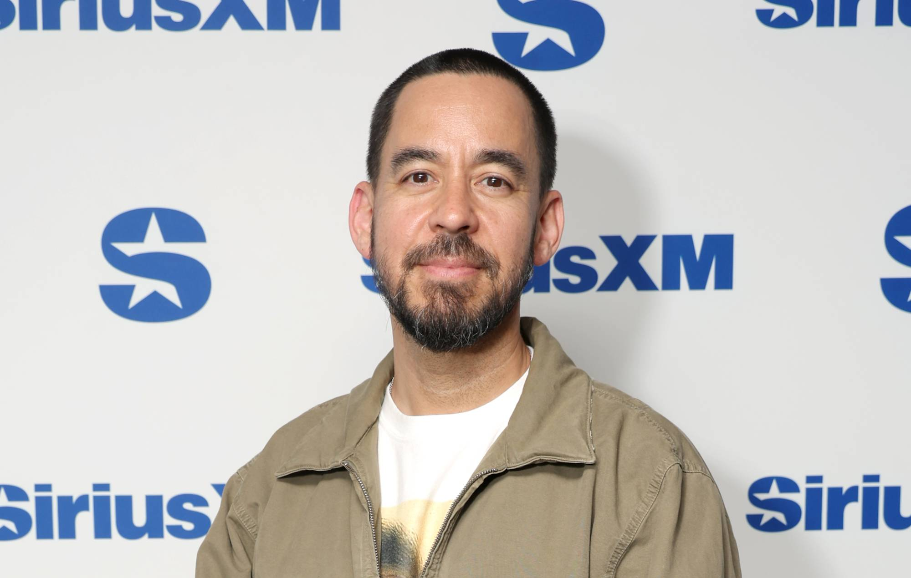
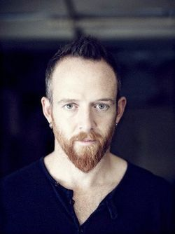
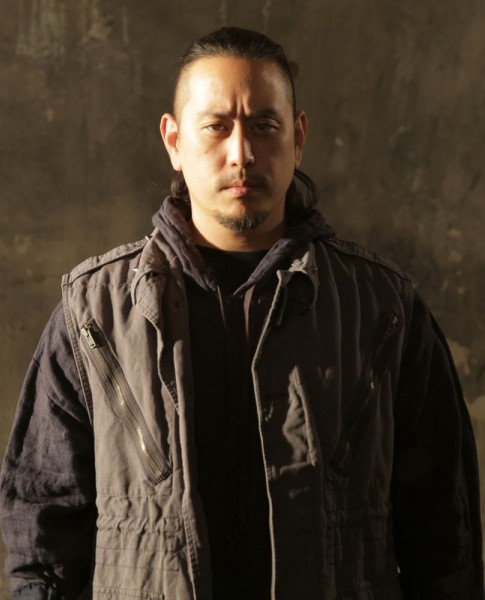
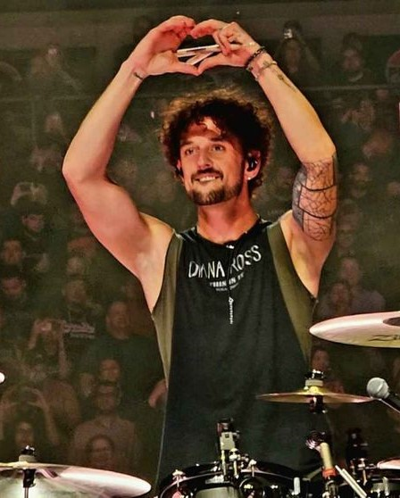
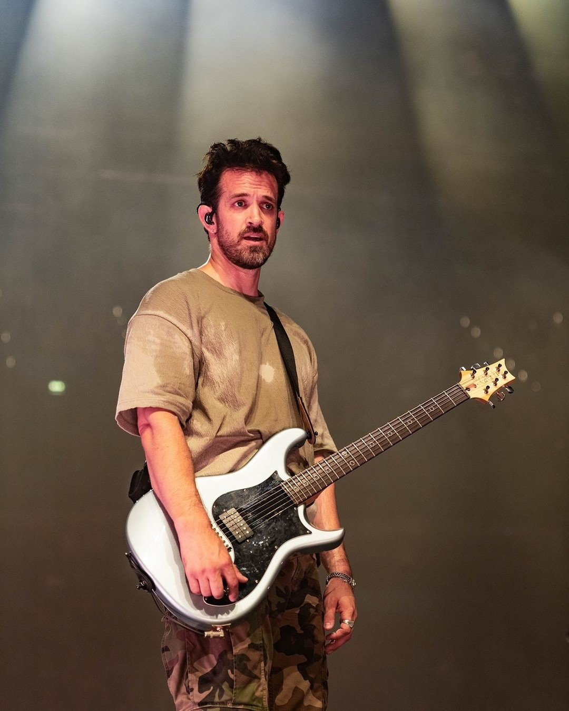
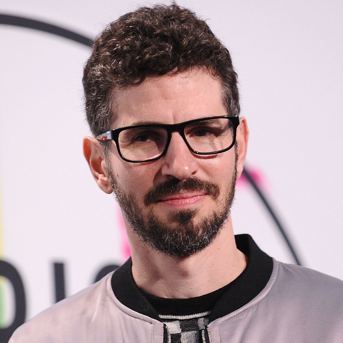
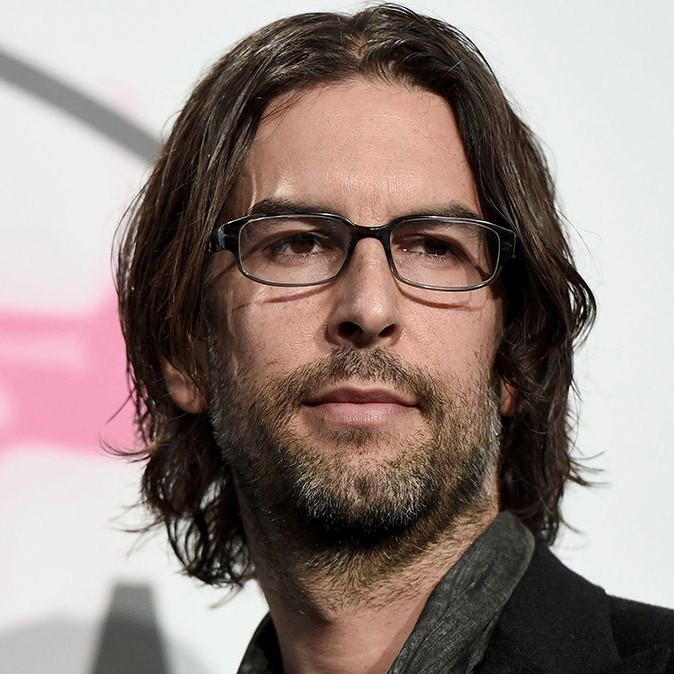
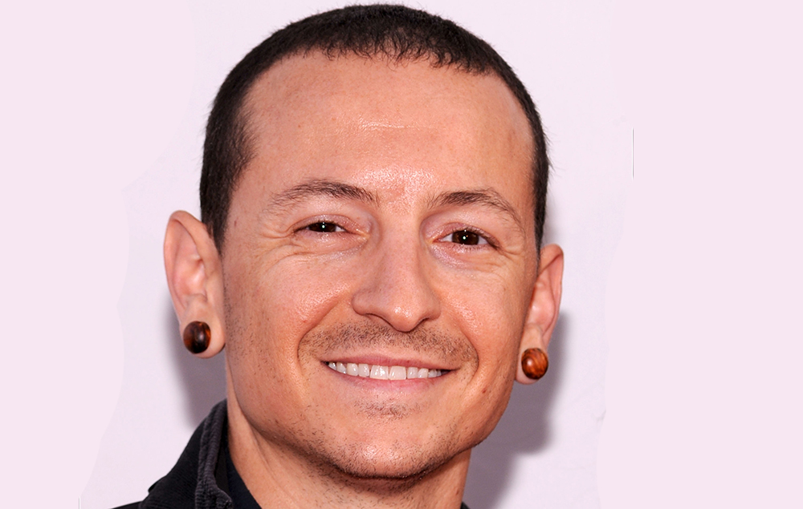

Banda
Linkin Park también conocida como Hybrid Theory (dada la hibridación entre melodía y rap y primer Álbum de estudio) SuperXero y Xero (nombre fundacional), fue fundada originalmente por tres amigos de escuela sedundaria, Mike Shinoda y Brad Delson junto con Rob Bourdon.
Después de la graduación de la escuela secundaria, empezaron a tomar sus intereses musicales más en serio, con el reclutamiento de Joe Hahn, Dave "Phoenix" Farrell, y Mark Wakefield nombrandola como "Xero".
Aunque limitados en recursos, la banda comenzó a grabar y producir canciones de estudio con Shinoda en una recámara productora en 1996. Después de no conseguir un contrato discográfico, la tensión y la frustración creció y la falta de éxito y el estancamiento en el progreso devinieron en el retiro de Wakefield que en ese momento era el vocalista, dejando la banda en busca de otros proyectos
No fue hasta 1999, que con el apoyo de Jeff Blue, quien ejercía como vicepresidente de Warner Records, lograron firmar su primer contrato. El nombre actual proviene de un juego de palabras que hace referencia al Lincoln Park en Santa Mónica.
Sitio web oficial
Integrantes actuales
Emily Amstrong

Emily Marcia Armstrong (Los Ángeles, 6 de mayo de 1986) es una cantante, música y compositora estadounidense, conocida por ser la vocalista principal de la banda Linkin Park desde 2024. También es cofundadora e integrante de la banda "Dead Sara".
Armstrong nació y creció en Los Ángeles, California. Sus padres eran miembros destacados de la Iglesia de la Cienciología y ella fue criada como ciencióloga. Comenzó a componer canciones con la guitarra cuando tenía 11 años, y a cantar cuando tenía 15. Abandonó la escuela secundaria, sabiendo que quería estar en una banda de rock tan pronto como tomó la guitarra por primera vez, sin interés en dedicarse a otra cosa. En una entrevista con El Paso Times en 2012, Armstrong dijo que la música era lo único que la mantenía motivada en la vida.
Mike Shinoda

Michael Kenji «Mike» Shinoda ( /ʃᵻˈnoʊdə/; en japonés: 篠田 賢治, romanizado: Shinoda Kenji) (Los Ángeles, 11 de febrero de 1977) es un músico, cantante, rapero, compositor, productor discográfico y multinstrumentista estadounidense. Cofundó Linkin Park en 1996 y es el rapero principal de la banda, además de guitarrista rítmico, teclista, compositor principal y productor. Más tarde, Shinoda creó un proyecto paralelo impulsado por el hip hop, Fort Minor, en 2004. También se desempeñó como productor de pistas y álbumes de Lupe Fiasco, Styles of Beyond y X-Ecutioners.
Shinoda también es cofundador de Machine Shop Records, un sello discográfico con sede en California. Fuera de la música, Shinoda es artista y diseñador gráfico. Ha pintado varias obras de arte, algunas de las cuales se han presentado en el Museo Nacional Japonés Americano. En 2018, Shinoda lanzó Post Traumatic, que contenía 18 canciones sobre sus sentimientos tras la muerte de su colega y viejo amigo Chester Bennington
Dave Farrell

David Michael Farrell (Plymouth, Massachusetts, 8 de febrero de 1977), más conocido como Phoenix, es el bajista del grupo de rock alternativo estadounidense Linkin Park. Actualmente forma parte del podcast de golf "Member Guest".
Farrell nació en Plymouth, Massachusetts pero más tarde se mudó a Mission Viejo, California cuando tenía cinco años. Se graduó en la Universidad de California. Toca el bajo, la guitarra eléctrica, el chelo y el violín.
Farrell ha declarado que sus influencias han sido su madre y su hermano Joe, al igual Weezer, The Beatles, Deftones, Pink floyd, Guns N Roses, The Smiths, Hughes y Wagner. Está casado desde diciembre de 2002 con Linsey Farrell y tienen cuatro hijos.
Joe Hahn

Joseph Hahn, conocido también como Joe Hahn, Chairman Hahn o Mr. Hahn (Dallas, Texas, 15 de marzo de 1977) es un director de videos musicales surcoreano-estadounidense, también conocido como el DJ en Linkin Park. Joe tiene un ''alter ego'' llamado Remy.
Creció en Glendale, California. Hahn es coreano-estadounidense de segunda generación.
Hahn se graduó de la Herbert Hoover High School en Glendale en 1995. Luego estudió en el Art Center College of Design de Pasadena, pero no se graduó. Hahn se unió a Linkin Park, llamada en ese entonces Xero, en 1997 como el DJ de la banda. Desde entonces, él ha dirigido la mayoría de los videos de la banda (excepto "One Step Closer","Crawling","Faint","Given Up" y "We Made It"). Hahn, junto con su compañero de banda Mike Shinoda, es responsable de la mayor parte de las ilustraciones de los álbumes de Linkin Park. Además, participó con Mike Shinoda en su producción The Rising Tied, del proyecto alterno de Hip Hop Fort Minor. A Joe se le ocurrió el concepto de One Step Closer y ha estado involucrado en todos los demás videos. Él es el director oficial de los videos para la banda.
Hahn se convirtió en el primer coreano estadounidense en recibir un Grammy cuando la banda ganó el premio 2002 de Mejor Interpretación de Hard Rock
Colin Brittain

Colin Brittain (nacido Colin Cunningham; Knoxville, 29 de diciembre de 1986) es un compositor, productor y músico estadounidense. Es el baterista de la banda Linkin Park desde 2024. Ha escrito y producido para artistas como Papa Roach, Hands Like Houses, Basement, Dashboard Confessional, 5 Seconds of Summer, Miyavi y One Ok Rock.
Alex Feder

Leonard Friend y Still a Great Night son los seudónimos musicales del músico, compositor y productor Alex Feder.
Alex fue el compositor, cantante y guitarrista de la banda The XYZ Affair, una de cuyas canciones de éxito se titula "All My Friends". Tras la desaparición de su anterior banda, Feder se trasladó de Brooklyn a Los Ángeles y empezó a grabar como "Leonard Friend". Su música se ha descrito como una mezcla de LCD Soundsystem y Justin Timberlake.
Su primer lanzamiento fue el EP Lynyrd Frynd, con el single principal "Serious Music2. La revista Nylon calificó este último como "el debut con el sonido más suave que hemos escuchado en mucho tiempo".
En 2013 lanzó una remezcla de "Suit & Tie" de Justin Timberlake.
Ha colaborado con otros artistas en proyectos y giras como Enrique Iglesias y Lp.
En 2024, Feder se convirtió en el guitarrista principal de gira de un Linkin Park reformado, sustituyendo al miembro fundador Brad Delson, que decidió abandonar las giras. Actuó por primera vez con Linkin Park el 5 de septiembre, y está previsto que aparezca en todos los conciertos de su gira mundial From Zero (2024-2025)
Brad Delson

Bradford Phillip Delson (Agoura, 1 de diciembre de 1977) es músico estadounidense, conocido por ser el guitarrista líder de la banda Linkin Park. También es el A&R de Machine Shop Recordings.
Brad Delson asistió a la Escuela Superior de Agoura con su amigo de la infancia y compañero de banda Linkin Park, Mike Shinoda. Tocó en varias bandas a lo largo de su carrera en la preparatoria, el más notable grado de ser relativa, en la que conoció y se asoció con el baterista Rob Bourdon. Relative Degree fue simplemente un concierto y, después de alcanzar ese objetivo, se disolvió. Después de graduarse en 1995, Delson, Shinoda, y Bourdon formaron Xero, que finalmente se convertiría en el punto de partida para Linkin Park. Delson entró en UCLA en 1995 como becario Regent trabajando hacia un título de Licenciada en Ciencias de la Comunicación, con especialización en Negocios y Administración. Fue miembro de Phi Beta Kappa, y compartió un dormitorio con el futuro compañero de banda Linkin Park, Dave Farrell en tres de sus cuatro años en la escuela, Farrell le mostró como tocar el bajo, y así también aprendió como tocar el bajo. Delson también tuvo la oportunidad de hacer una pasantía con un miembro de la industria de la música como parte de sus estudios y terminó trabajando para Jeff Blue, un representante de A & R de Warner Bros. Records, que ofrece una crítica constructiva en los demos de Xero. Blue más tarde introdujo Chester Bennington, que se convertiría en el vocalista de Linkin Park, con el resto de la banda. Después de graduarse en 1999, Delson decidió renunciar a la facultad de derecho con el fin de seguir una carrera musical con Linkin Park. Él sigue siendo un gran fan de todas las cosas azul y oro. Brad es de ascendencia judía.
Sin embargo no formara parte de la banda durante las giras y conciertos en vivo, en su lugar participará en el estudio durante sesiones de producción y grabación. Tal y como explica en un comunicado oficial tanto la banda como el guitarrista, se trata de una decisión personal de cara exclusviamente a los espectáculos. "A lo largo de los años me he dado cuenta de que prospero más cuando trabajo activamente con mis compañeros de banda detrás de las escenas -- en el estudio, colaborando en nuestra nueva música, y ayudando a construir nuestro show en vivo", ha explicado el artista, indicando que su trabajo ahora se centrará más en procesos creativos que en la performance en sí misma.
Integrantes anteriores
Rob Bourdon

Robert Gregory "Rob" Bourdon (Calabasas, California; 20 de enero de 1979) es un músico estadounidense, conocido por haber sido el baterista de la banda Linkin Park.
Robert Gregory Bourdon nació el 20 de enero de 1979. Rob nació en Calabasas, California y ahora vive en Los Ángeles. Sus padres son Gregory y Patty; tiene un hermano menor llamado Dave. Creció en la misma ciudad que los miembros de Incubus y fue a la escuela con los miembros de Hoobastank.
Rob comenzó a tocar la batería a la edad de 10 años tras ver un concierto de Aerosmith. Ya que su madre, Patty, fue la exnovia de Joey Kramer, el baterista de Aerosmith, Bourdon pudo estar en el backstage y ver toda la producción. Kramer también dio a Rob un pedal de bombo. A Rob también le gusta tocar piano cuando tiene tiempo. Rob acostumbraba a tomar lecciones cuando era joven y forzado a seguir.
Chester Bennington

Chester Charles Bennington (Phoenix, 20 de marzo de 1976-Palos Verdes, 20 de julio de 2017) fue un músico estadounidense, conocido por ser el vocalista principal y compositor de la banda Linkin Park. También fue el vocalista principal de las bandas Grey Daze, Dead by Sunrise y Stone Temple Pilots.
Bennington ganó prominencia por primera vez como vocalista tras el lanzamiento del álbum debut de Linkin Park, Hybrid Theory (2000), que fue un éxito comercial mundial. El álbum fue certificado Diamante por la Recording Industry Association of America, en español: "La Asociación de la Industria Discográfica de América", en 2005, lo que lo convierte en el álbum debut más vendido de la década, así como uno de los pocos álbumes en lograr tantas ventas. Los siguientes álbumes de estudio de Linkin Park, desde Meteora (2003) hasta One More Light (2017), continuaron con el éxito de la banda.
Bennington formó su propia banda, Dead by Sunrise, como un proyecto paralelo en 2005. El álbum debut de la banda, Out of Ashes, fue lanzado el 13 de octubre de 2009. Se convirtió en el cantante principal de Stone Temple Pilots en 2013 para lanzar la obra extendida High Rise el 8 de octubre de 2013, a través de su propio sello discográfico, Play Pen, pero se fue en 2015 para centrarse únicamente en Linkin Park. Como actor, apareció en películas como Crank (2006), Crank: High Voltage (2009) y Saw 3D (2010).
Bennington luchó contra la depresión y el abuso de sustancias durante la mayor parte de su vida, desde su niñez. El 20 de julio de 2017 fue encontrado muerto en su casa de Palos Verdes Estates, California; su muerte fue declarada suicidio por ahorcamiento. La revista Hit Parader colocó a Bennington en el puesto 46 de su lista de los "100 mejores vocalistas de metal de todos los tiempos". Bennington ha sido acreditado por varias publicaciones como uno de los mejores vocalistas de rock de su generación. Escribiendo para Billboard, Dan Weiss declaró que Bennington "convirtió el nu metal en universal"
Mark Wakefield
Mark Wakefield (n. 31 de mayo de 1974) es el representante de la banda "Taproot", y el primer vocalista de la banda Linkin Park antes de que Chester Bennington se uniera a esta, cuando todavía se llamaban Xero. Conoció a Mike Shinoda en la secundaria y se unió a la banda, aún llamada SuperXero. Más adelante cambiaron el nombre a Xero y grabaron un EP de nombre homónimo que contenía las canciones, Fuse, Reading My Eyes, Stick N' Move y Rhinestone.
Abandonó tiempo después Xero para convertirse en mánager de la banda Taproot. Desde entonces ha registrado dos canciones, una titulada Ground Xero que fue grabada al poco tiempo de dejar Xero y la otra titulada Barack Your World en la que canta junto con Mike Shinoda (Bajo el pseudónimo de White Pegacorn) dando su apoyo al candidato Barack Obama en las elecciones de 2008. Barack Your World es, en realidad, una parodia con video incluido.
Es el autor de la portada del disco Toxicity, de la banda System of a Down.
Mantiene un bajo perfil, ha tenido miedo escénico y trabaja para Velvet Hammer una empresa que represeanta y administra bandas de alto nivel dentro del género como System Of A Down (SOAD), AFI, Deftones, etc.